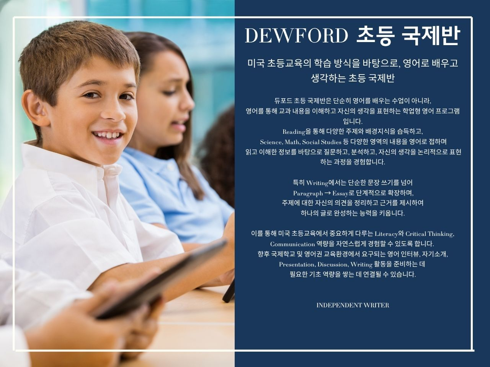

INTERNATIONAL PRIMARY
듀포드 초등 국제반은 미국 초등교육의 학습 방식을 바탕으로 영어를 통해 교과 내용을 이해하고 자신의 생각을 표현하는 학업형 영어 프로그램으로, 영어 몰입 환경을 경험한 학생이 읽기를 넘어 생각을 논리적으로 구성하고 표현하는 과정입니다.

Academic Reading
읽기를 통해 지식과 배경을 넓힙니다.
다양한 주제의 글을 읽으며 어휘력과 독해력을 기르고, 여러 분야의 지식과 배경 정보를 습득합니다.
Integrated Academic Learning
다양한 교과 주제를 영어로 탐구합니다.
Science, Math, Social Studies 등 다양한 영역의 내용을 영어로 접하며 교과 지식을 확장합니다.
Critical Thinking & Discussion
질문하고 분석하며 자신의 관점을 형성합니다.
읽고 배운 내용을 바탕으로 질문하고 분석하며, 자신의 의견을 논리적으로 정리하는 연습을 합니다. 토론과 발표 활동을 통해 생각을 명확하게 전달하고 다른 사람의 관점을 이해하는 의사소통 능력을 기릅니다.
Paragraph & Essay Writing
자신의 생각을 논리적인 글로 완성합니다.
문장 쓰기에서 시작해 Paragraph와 Essay로 글쓰기의 범위를 단계적으로 확장합니다. 주제에 대한 자신의 의견을 정리하고, 근거를 제시하며, 생각을 일관성 있는 글로 완성하는 능력을 기릅니다.
Presentation & Communication
배운 내용을 자신의 언어로 표현합니다.
탐구한 주제와 학습 내용을 발표하고 토론하며, 자신의 생각을 말과 글로 전달하는 능력을 발전시킵니다. 영어 인터뷰, 자기소개, Presentation, Discussion, Writing 활동에 필요한 기초 역량을 쌓아갑니다.